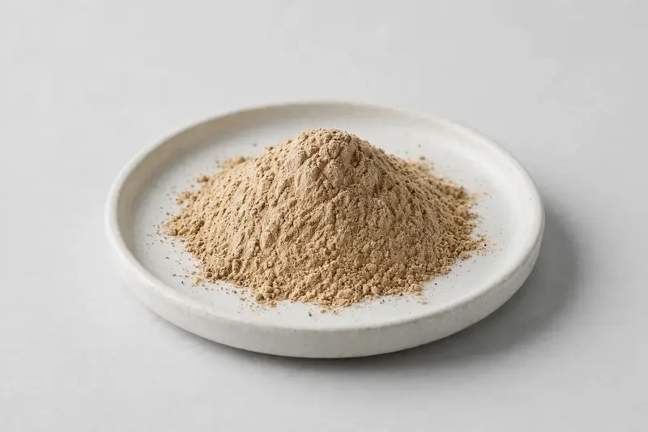

Papain (Carica papaya) — a papaya latex-derived proteolytic enzyme powder for digestive-enzyme positioned formulations.

Overview
Papain is a proteolytic enzyme obtained from the latex of papaya (Carica papaya), widely used in digestive-enzyme supplements and multi-enzyme blends. Activity is conventionally expressed in USP units, and buyers frequently specify both the activity level and the physical form they need. We source through vetted partner producers and confirm activity, carrier and testing scope against each buyer's stated specification.
Specifications below reflect commonly requested options in the market — not a stock list. Share your target spec and we'll confirm exactly what we can supply, honestly.
| Specification | Details |
|---|---|
| Botanical identity | Papain, papaya latex (Carica papaya)-derived enzyme powder |
| Source material | Latex |
| Marker compound | Papain — enzyme activity expressed in USP units; specify your target activity |
| Appearance | Light tan to light brown fine powder |
| Analytical methods | Methods referenced in buyer specifications: HPLC |
| Mesh size | Typically 80–100 mesh (confirm per inquiry) |
| Testing | COA/TDS arranged on request; scope agreed per your spec |
Applications
Documentation
We don't claim in-house labs or certifications we don't hold. COA and TDS documents can be arranged on request, and testing scope is agreed against your specification before supply.
FAQ
Related products
Beta vulgaris
Key marker: Nitrates / Betaines
View specs →Prunus cerasus
Key marker: Anthocyanins
View specs →Camellia sinensis
Key marker: EGCG / Polyphenols
View specs →Rutin (Sophora japonica)
Key marker: 95%+ HPLC
View specs →Hesperidin (Citrus spp.)
Key marker: Hesperidin 90-98%
View specs →Send your target spec and volumes — we'll respond with a tailored quotation.
Request a Quote